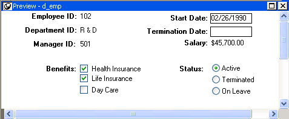
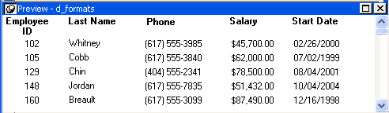

A DataWindow object is an object you use to retrieve, present, and manipulate data from a relational database or other data source (such as an Excel worksheet or dBASE file).
DataWindow objects have knowledge about the data they are retrieving. You can specify display formats, presentation styles, and other data properties so that users can make the most meaningful use of the data.
You can display the data in the format that best presents the data to your users.
If a column can take only a small number of values, you can have the data appear as radio buttons in a DataWindow object so that users know what their choices are.

If a column displays phone numbers, salaries, or dates, you can specify the format appropriate to the data.

If a column can take numbers only in a specific range, you can specify a simple validation rule for the data, without writing any code, to make sure users enter valid data.
If you want to enhance the presentation and manipulation of data in a DataWindow object, you can include computed fields, pictures, and graphs that are tied directly to the data retrieved by the object.
Before you can use a DataWindow object, you need to build the object. To do that you can go to the DataWindow painter, which lets you create and edit DataWindow objects. It also lets you make PSR (Powersoft report) files, which you might also want to use in applications. A PSR file contains a report definition—essentially a nonupdatable DataWindow object—as well as the data contained in that report when the PSR file was created.
This section describes the overall process for creating and using DataWindow objects. You can use DataWindow objects in client/server, Web-based, and multitier applications. For more information about using DataWindow objects in different kinds of applications and writing code that interacts with DataWindow objects, see the DataWindow Programmer's Guide .
 To use DataWindow objects in an application:
To use DataWindow objects in an application:
Create the DataWindow object using one of the DataWindow wizards on the DataWindow tab page of the New dialog box.
The wizard helps you define the data source, presentation style, and other basic properties of the object, and the DataWindow object displays in the DataWindow painter. In this painter, you define additional properties for the DataWindow object, such as display formats, validation rules, and sorting and filtering criteria.
For more information about creating a DataWindow object, see "Building a DataWindow object ".
Place a DataWindow control in a window or user object.
It is through this control that your application communicates with the DataWindow object you created in the DataWindow painter.
Associate the DataWindow control with the DataWindow object.
Write scripts in the Window painter to manipulate the DataWindow control and its contents.
For example, you use the PowerScript Retrieve method to retrieve data into the DataWindow control.
You can write scripts for the DataWindow control to deal with error handling, sharing data between DataWindow controls, and so on.
Reports and DataWindow objects are the same objects. You can open and modify both in the DataWindow painter. However, a report is not updatable and can only be used to present data. For information about how you can specify whether users can update the data in a DataWindow object, see Chapter 21, "Controlling Updates in DataWindow Objects."